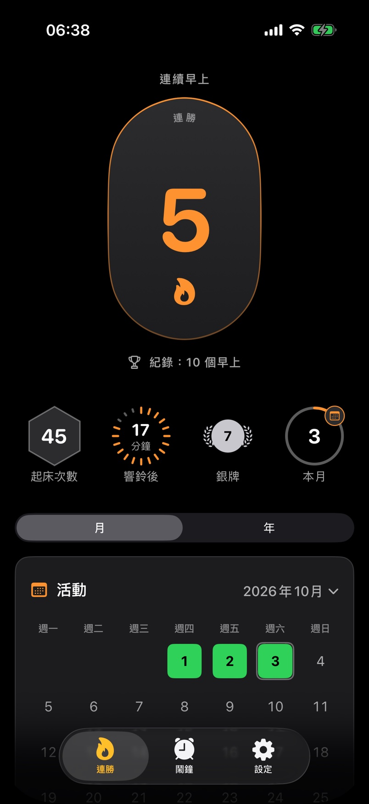
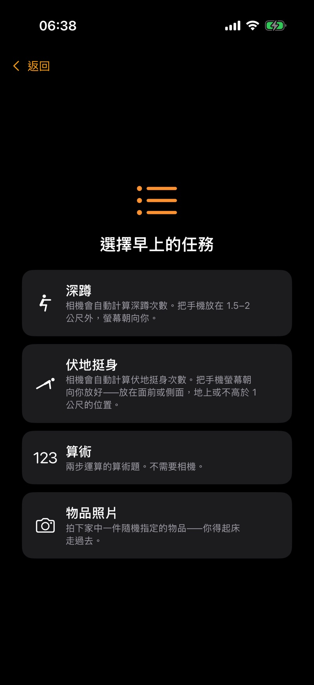
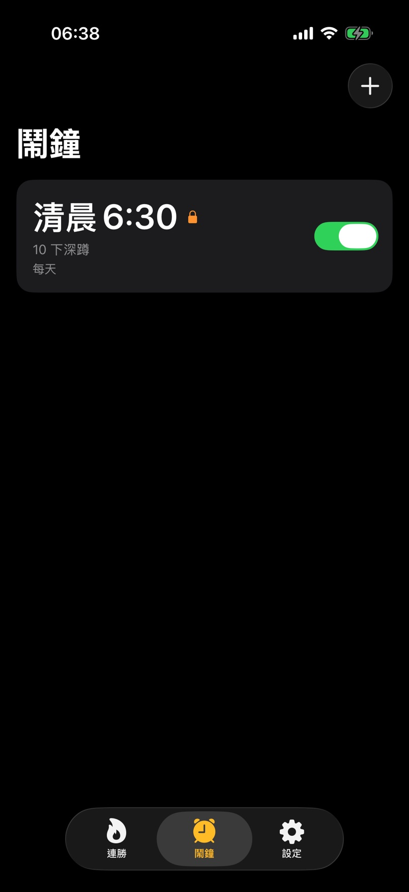

只滑一下不夠
如果滑動關閉鬧鐘或用音量鍵讓它靜音，一分鐘後它會再次響起，最多三次。如果進入任務卻沒在 5 分鐘內完成，它會再響一次。
AlarmStreak 是一款 iPhone 鬧鐘，只有完成任務才計入早上：深蹲、伏地挺身、算術題，或拍下家中隨機指定的物品。
 AlarmStreak 即將登上 App Store
AlarmStreak 即將登上 App Store



準時起床。沒有稍後提醒按鈕，你有 15 分鐘開始任務。
早上從運動開始。選擇深蹲或伏地挺身——10 下全由相機替你計數。
想一直延續的連勝。每個計入的早上都會讓連勝加一。沒有鬧鐘的日子和因休假或生病設定的暫停都不會中斷它。
如果滑動關閉鬧鐘或用音量鍵讓它靜音，一分鐘後它會再次響起，最多三次。如果進入任務卻沒在 5 分鐘內完成，它會再響一次。
響鈴前 4 小時鬧鐘會鎖定。之後延後、關閉、刪除鬧鐘或降低任務難度都會中斷連勝。提早起床或提高任務難度隨時都可以。
睡前不用打開聲音，也不用讓 App 保持開啟：即使手機處於靜音模式或開啟了「勿擾模式」，鬧鐘也會響。
深蹲、伏地挺身和照片中的物品都直接在手機上辨識。影片和照片不會傳送到任何地方。不需註冊，沒有分析統計。
幫你準時起床、用運動開啟新的一天的 iPhone 鬧鐘。沒有稍後提醒按鈕。
即將登上 App Store